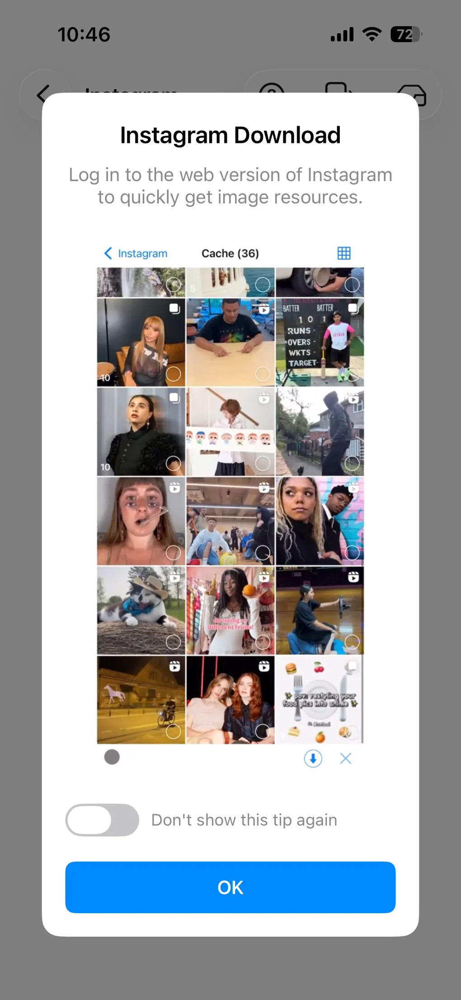
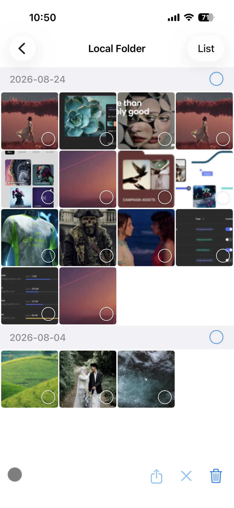

Instagram の写真・リール・動画を保存する方法
以前は Instagram の写真や動画をカメラロールに保存するにはスクリーンショットを撮るしかなく、画質が落ち、画面の UI が写り込み、隅に透かしが残りました。ImageGet なら違います。Instagram アカウントにログインして普段どおりに閲覧するだけで、目にした写真・リール・動画が自動的にキャッシュされ、その中から保存したいものを選べます。Instagram の写真・リール・動画を保存する手順を紹介します。
ImageGet を無料でダウンロード — Instagram の写真・リール・動画をワンタップで保存。
ImageGetをダウンロードステップ 1: Instagram アカウントにログイン
ImageGet を開き、Instagram タブをタップします。アカウントでログインすると、フィード・プロフィール・発見ページに安全に接続されます。すべて ImageGet の中で完結します。ログイン後は、公式アプリと同じように投稿やプロフィール、発見ページを見て回れます。Instagram のコンテンツにリンクをコピー＆ペーストする必要はありません。フォローしているものも、探しているものも、すべてその場にあり、保存するだけです。

ステップ 2: 閲覧する — 写真・リール・動画は自動でキャッシュ
ログインしたら、普段どおりに Instagram を見て回ります。フィードやプロフィール、発見ページをスクロールするあいだ、ImageGet は出会った写真・リール・動画をすべて自動でキャッシュし、バックグラウンドで静かに動き続けます。タップするものも、コピーするリンクもありません。目にしたものが、閲覧しながら集まっていきます。

ステップ 3: 選んでダウンロード
閲覧が終わったらキャッシュを開き、ImageGet が集めたものを確認します。残したい写真・リール・動画を選び、ワンタップで写真ライブラリへダウンロードします。写真は最大解像度で保存され、リールは音声付きの動画として保存されます。圧縮も透かしもありません。低画質のサムネイルを飛ばして高解像度の画像だけを残したいときは、Smart Filtering をオンにします。

Instagram 保存のヒント
- プロフィールごとまとめて保存 — 1 つのアカウントの写真と動画をまとめて取得。写真家やアーティストのフィードを丸ごと保存したいときに便利です。
- Smart Filtering を活用 — 低解像度のサムネイルやアバター、アイコンを飛ばし、本当に必要な高画質の画像だけを残します。
- 著作権を尊重 — 保存する権利のある写真・動画だけを保存し、再投稿や共有の際は必ず元の作者を明記してください。
よくある質問
Instagram のリールや動画もダウンロードできますか？
はい。リールや動画は画面収録なしで、音声付きの動画として写真ライブラリに保存されます。
Instagram の写真保存は無料ですか？
はい。無料プランには Instagram の画像・動画 3 回分のダウンロードが含まれます。Premium にアップグレードすると、保存回数が無制限になり、広告も表示されません。
スクリーンショットや画面収録は必要ですか？
いいえ。ImageGet は Instagram の写真やリールをそのまま高画質で保存します。スクリーンショットも画面収録も不要です。
画質は落ちませんか？
はい。ImageGet は Instagram の写真やリールを最大解像度で保存します。圧縮も透かしもありません。